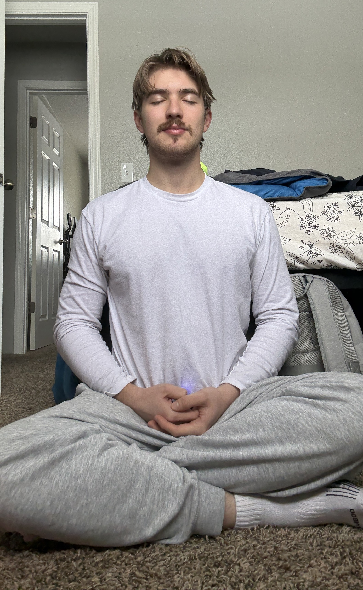

How I got started: During Covid, like many people, I became very anxious.
I spoke with a therapist on zoom for a while about my racing thoughts and panic attacks, but things stayed the same. At some point,
he recommended that I tried meditating. After researching it and finding exceptional praise of its benefits, I decided to try it.
I used some guided meditations at first, then I did it on my own, using the techniques I was learning in the audio tracks.
For something that seemed simple, it was unusually difficult to sit still and observe my mind. I'd find myself ruminating or suddenly
up, following an impulse that I hadn't noticed, but as is the nature of the practice, I continued on, increasing my awareness of my thoughts.
Eventually, something exceptional happened after I pushed myself to meditate for a full hour. When I finally got up from this
particular session, I asked myself "do I have any thoughts?" and in response, my mind was completely still. I even found that I couldn't
think for a short while after. In those moments, what I felt was peaceful bliss. I've been hooked ever since.
Now, after several years of meditation, it is something I love to do. I sit in my mind, watch phantom colors flow in abstract forms behind my eyelids, listen to music that plays, no headphones required, and move sensations throughout my body without so much as a touch. This awareness that I have cultivated follows me wherever I go, permeating into my every day. I notice impulses before they can take control, such as the urge to check my phone when I'm bored, and I can simply let the feeling pass. It is one my favorite habits - and yes, hobbies - that I have acquired. I recommend it to everybody.
